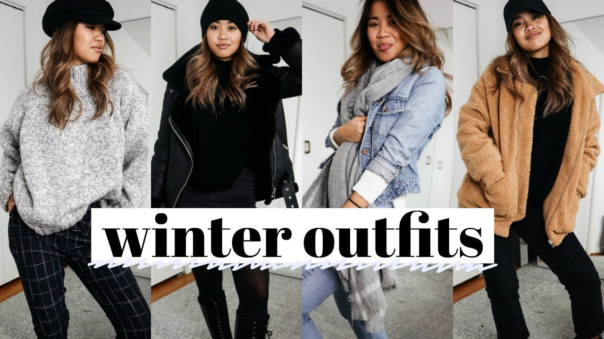

Just because you are staying warm, doesn't mean you can't look cute.
Winter is all about staying warm. Sweaters are key. They are cute, comfy, and stylish. They pair perfectly for any occasion. From going out to dinner, or lounging at home, a sweater will be your best friend during the winter.
Another fun thing about winter is hats are always acceptable.Beanies look good on just about anyone and they can be really helpful when you wake up late and don't have time to fix your hair.